Mediamatikerin in Ausbildung bei Swisscom und blue News
Content, der hängen bleibt.
Social Media, Video, Foto und Design mit Persönlichkeit.
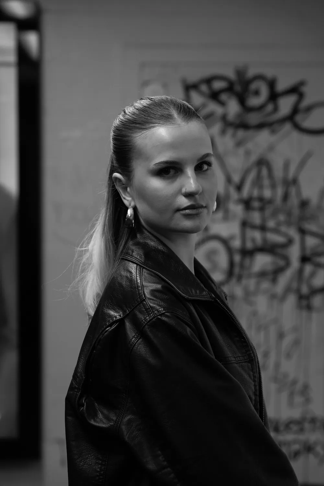
- 19
- Jahre jung
- 3.
- Lehrjahr als Mediamatikerin
- täglich
- Content für blue News
Was ich mache.
Ich mag Projekte, bei denen aus einer Idee etwas Echtes entsteht: ein Video, ein Bild oder ein Beitrag, der hängen bleibt.
Täglicher Content für blue News auf Instagram und TikTok: Reels, Strassenumfragen, Challenges, Thumbnails und Captions. Vor und hinter der Kamera.
Arbeiten ansehen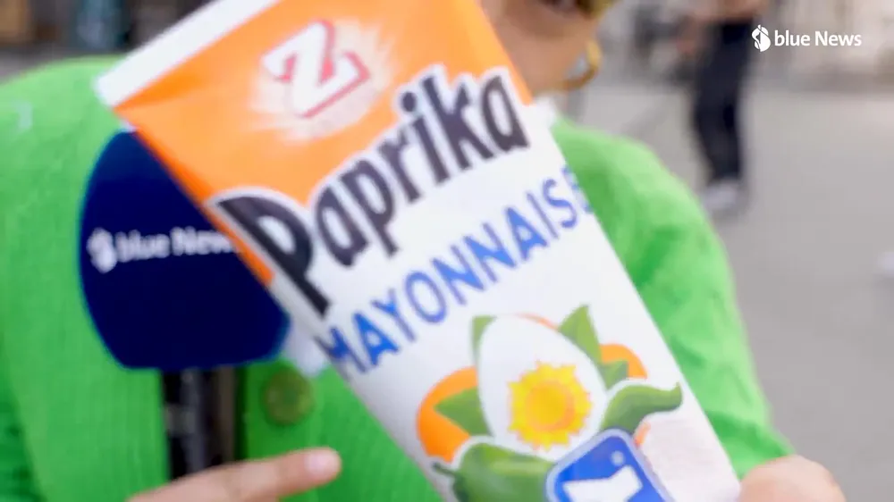
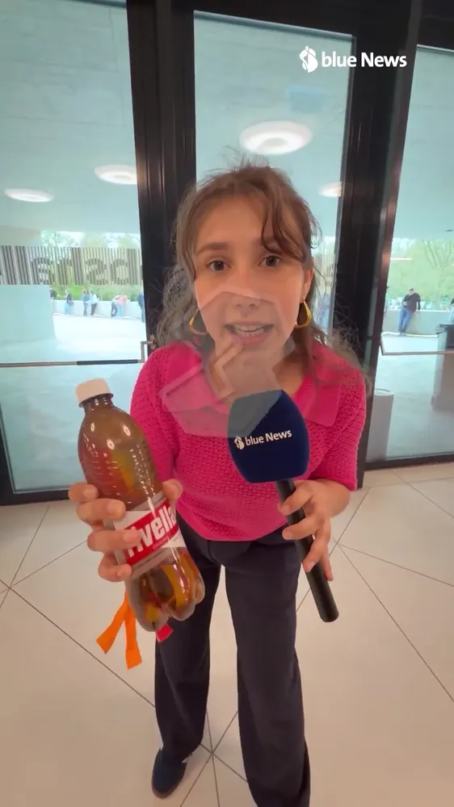
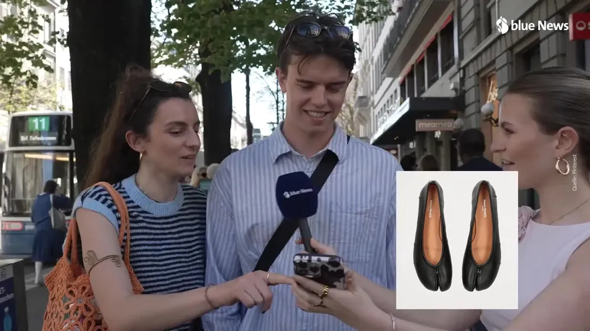
Von der Idee über Kamera und Drohne bis zum fertigen Schnitt mit Color Grading, am liebsten in Premiere Pro und DaVinci Resolve.
Arbeiten ansehen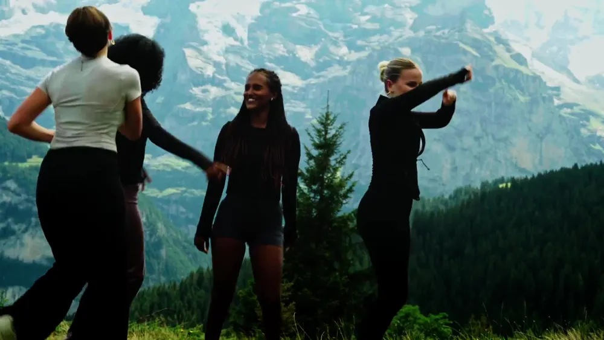
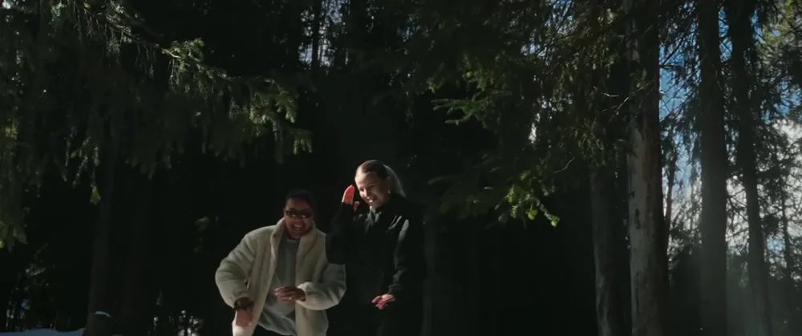
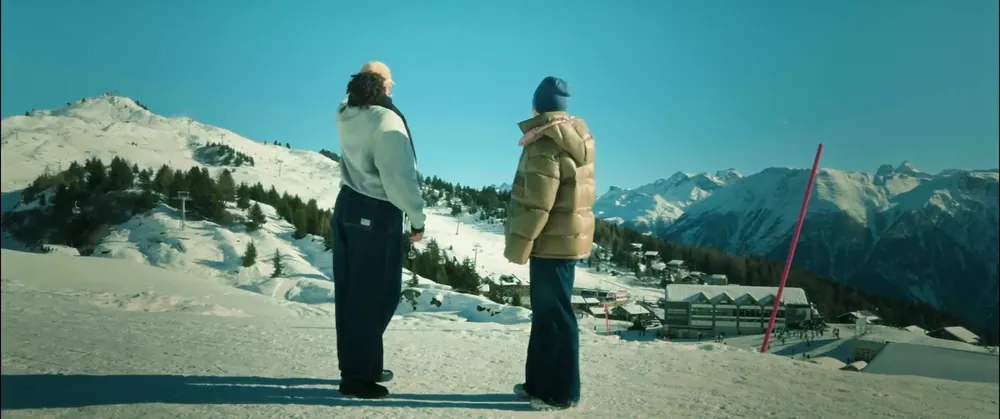
Porträts im Studio und draussen, Lichtexperimente und Bewegung. Bearbeitet in Lightroom.
Arbeiten ansehen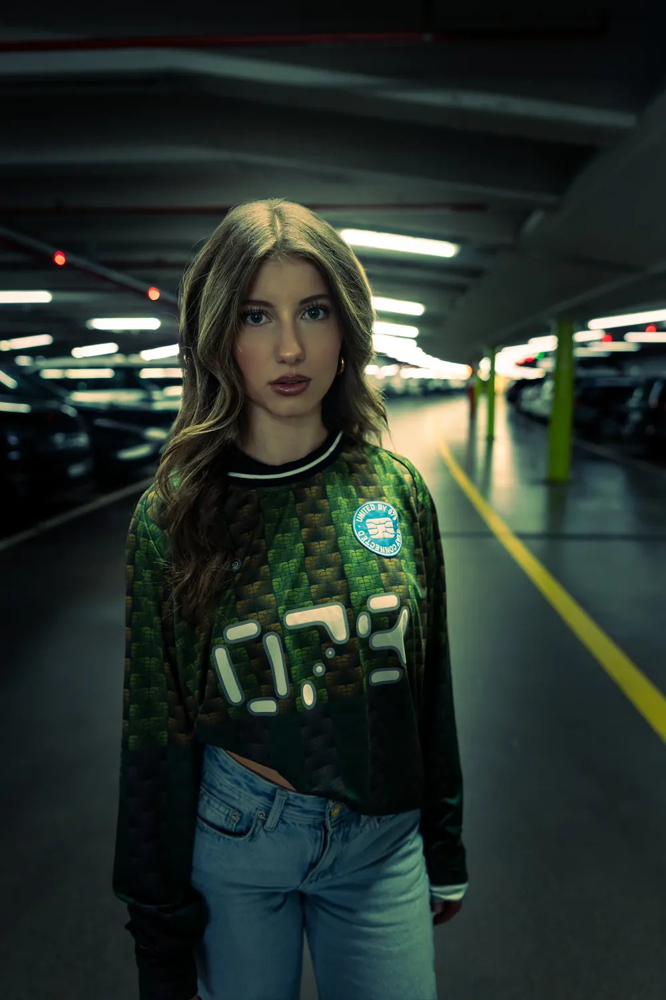
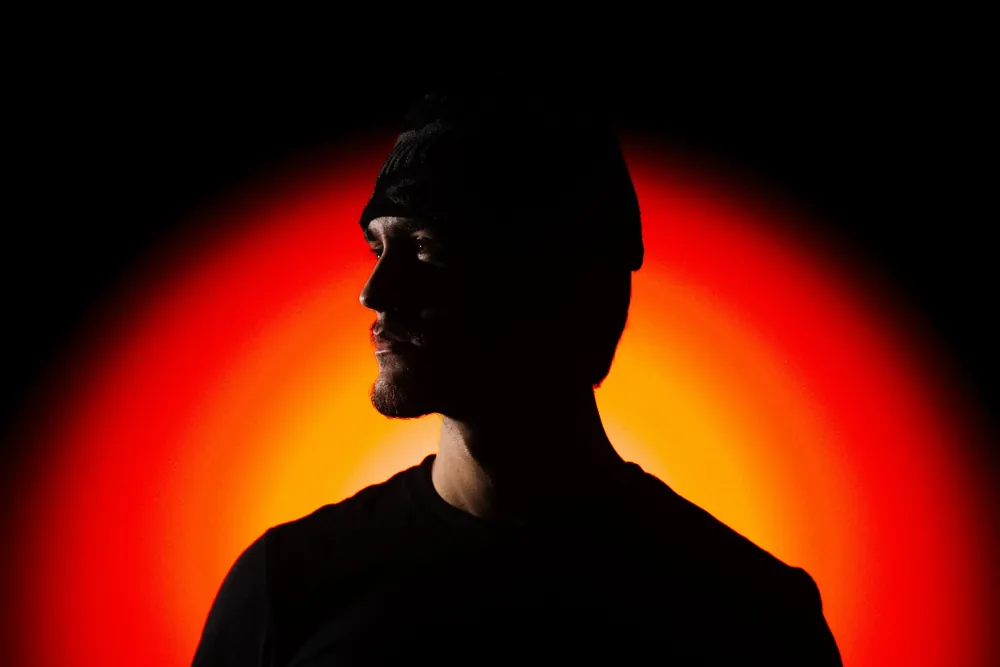
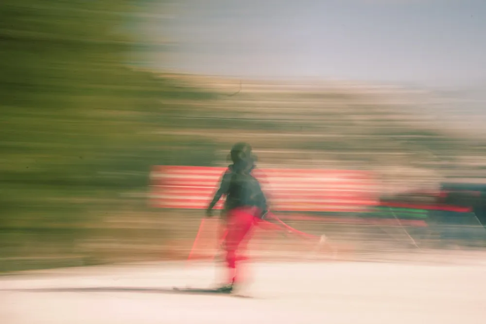
Plakate, Typografie, Illustrationen und Kampagnen, zum Beispiel für die Modemarke nocari. im ÜK Printprodukte.
Arbeiten ansehen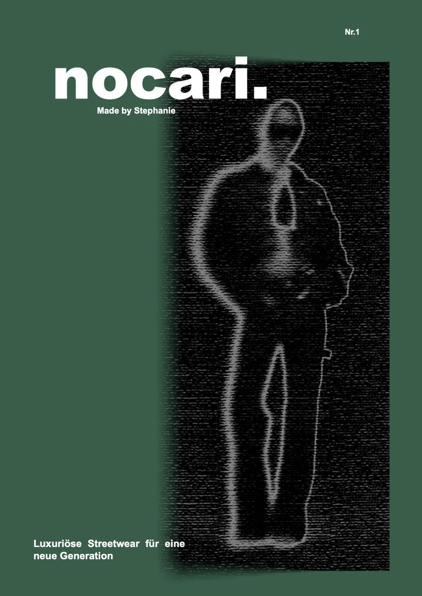
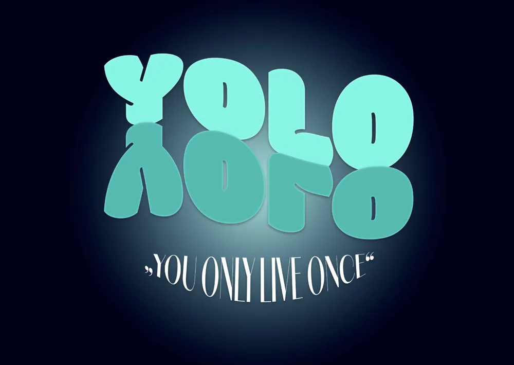
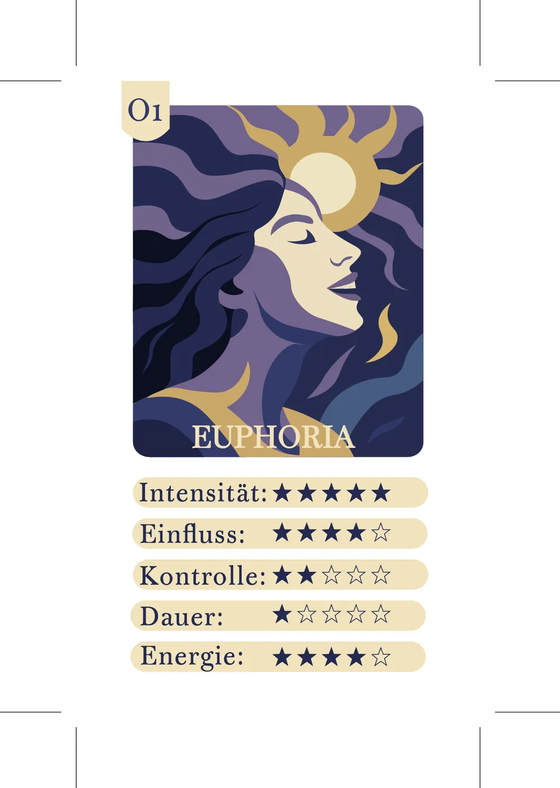
Arbeiten.
Über mich.
«Kreativität bedeutet für mich, Ideen sichtbar und spürbar zu machen.»
Nach meiner ersten Ausbildung im Gesundheitsbereich merkte ich, dass ich kreativer arbeiten möchte. Heute mache ich die Ausbildung zur Mediamatikerin und arbeite am liebsten an Videos, Fotos, Social-Media-Beiträgen und Designs.
Mir ist wichtig, dass Inhalte klar sind, gut aussehen und Menschen erreichen. Ich arbeite ehrlich, mit Gefühl für Details, und probiere gerne Neues aus.
Mein Weg
Feb. 2026 – heute
blue News Social Media
Swisscom / blue News
Reels, Thumbnails, Captions, Bildposts und kurze News-Videos. Aktuelle Themen schnell, verständlich und visuell spannend erzählen.
Aug. 2025 – Feb. 2026
Motion
Swisscom Bern
Kamera, Schnitt und visuelle Kommunikation. Hier ist mein Gefühl für Storytelling und Bildsprache gewachsen.
Feb. 2025 – Juli 2025
Creative Studio
Swisscom Zürich
Design, Fotografie und Bildbearbeitung. Der Blick für Layout, Details und Wirkung wurde schärfer.
Aug. 2024 – Jan. 2025
[M]INI NET
Swisscom Bern
Start der Ausbildung zur Mediamatikerin: Medienproduktion, Gestaltung, Fotografie, digitale Projekte.
Dez. 2023 – Juni 2024
Detailhandel
Coop, Bern
Kundenkontakt, Teamarbeit und Verantwortung.
Aug. 2022 – Juli 2023
Fachfrau Gesundheit
Stiftung Lebensart, Konolfingen
Meine erste Ausbildung. Dabei merkte ich, dass mein Weg in Richtung Medien und Gestaltung führt.
Programme
- Premiere Prosicher
- Lightroomsicher
- After Effectsin Entwicklung
- Photoshopin Entwicklung
- DaVinci ResolveGrundlagen
- IllustratorGrundlagen
- FigmaGrundlagen
- InDesignGrundlagen
Content gefällig?
Für ein Projekt, ein Praktikum oder einfach eine Idee: Schreib mir.
steph.soraya@gmx.ch
Social first.
Seit Februar 2026 produziere ich täglich Content für blue News: von der Strassenumfrage bis zur Challenge.
hier bin ich vor der Kamera!
Tauschchallenge blue News
Trikot-Verlosung Giveaway